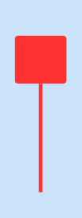

K線組合型態
陽線
大陽線 |
小陽線 |
||
 |
開盤價即為最低價，隨後股價一路上攻，最後收在股價最高點，代表買盤力道強勁。 |  |
股價跌到低點時有買盤支撐，但漲到高點又遇到賣壓，最終由多方略勝一籌，推升股價呈現上漲狀態，K 線出現這樣的型態，通常是一種反轉訊號，如果在大漲後出現，表示高檔震盪﹔反之，如果在大跌後出現，可能表示股價已觸底，未來股價有望反彈。 |
光頭陽線 |
光腳陽線 |
||
 |
開盤後股價一度下跌，但因有買盤支撐，推升股價一路走升，最終收在最高價位，當下影線越長，代表反彈的力道越大，屬於多頭上漲的訊號。 |  |
開盤後股價一度衝至最高點，但在高檔區遭遇賣壓，最終由多方略勝一籌，收盤價仍高於開盤價，當上影線越長，代表賣盤力道較強、拉回程度越大。 |
陽線錘子 |
倒線錘子 |
||
|  | 股價大跌之後，空方力道減弱，隨後買盤一路買到最高價作收，如果在長期下跌的情況下，看到這樣的型態，代表買盤已積累一段時間後開始釋放，可以視為股價底部支撐的訊號。 | 股價大漲之後，多方力道減弱，隨後股價被賣盤拉回，但最終由多方略勝一籌，收盤價仍高於開盤價，上影線的長度表示拉回的程度，上影線越長，代表賣壓越大。 | |